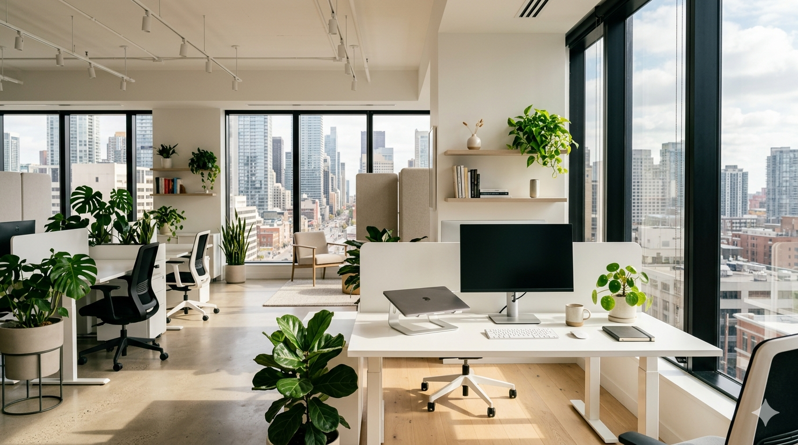

働きながら経験を重ねる福祉サービス
Type A Employment Support
株式会社リンクワークは、就労継続支援A型事業所として、雇用契約のもとで働く機会を提供しています。 軽作業とIT作業を通じて、一人ひとりの得意やペースを確かめながら、実務に向き合う力を育てます。
封入、検品、仕分け、梱包など
Web制作、更新、データ入力など
支援と仕事を切り離さない
体調、得意な作業、不安な工程を確認しながら、実際の仕事に取り組みます。 福祉としての安心感と、仕事としての責任感を両立させることを大切にしています。
納品まで見据えて進める
企業からお預かりする業務は、手順化、担当分け、確認、納品までをスタッフが管理します。 はじめてのご依頼でも相談しやすい進行体制を整えています。


Light Work
手順を確かめながら、丁寧に積み重ねる軽作業。
封入、シール貼り、検品、仕分け、梱包など、手を動かしながら進める仕事です。 作業を小さな工程に分け、確認しやすい形にして取り組みます。

01 / Light Work
手で覚える仕事を、無理のない工程に。
決まった手順に沿って進める作業を中心に、集中しやすい環境と確認しやすい流れを整えています。 はじめての作業でも、スタッフが工程ごとに確認しながら進めます。
資料のセット、ラベル貼り、袋詰めなどを手順に沿って進めます。
サンプルや指示書と見比べながら、状態や数量を確認します。
種類や宛先ごとに分け、出荷前の梱包まで丁寧に行います。
繰り返しのある作業も、品質を保ちながら安定して進めます。
Digital Work
PCを使って、企業の運用を支えるIT作業。
Web制作、ホームページ更新、WordPress運用、データ入力、画像整理など、画面上で進める仕事にも取り組んでいます。 手順書やチェックリストをもとに、担当できる工程を少しずつ広げます。
Webサイト制作
HTML/CSSのコーディング、画像差し替え、下層ページ制作などを行います。
ホームページ更新
お知らせ更新、文章修正、画像整理など、日々の運用業務を支援します。
WordPress運用
記事投稿、カテゴリ整理、管理画面での編集作業などに対応します。
データ入力・整理
入力、チェック、リスト整理など、正確さが求められる作業を進めます。
Support System
利用者の安心と、企業の依頼しやすさを同じ仕組みで支えます。
A型事業所としての支援と、業務を受ける事業者としての品質管理を分けずに考えます。 作業前の確認、作業中の見守り、納品前のチェックまで、スタッフが一緒に伴走します。
作業を小さく分ける
内容を工程ごとに分け、担当しやすい形に整理します。迷いやすい部分は手順書や見本で確認します。
スタッフが進行を確認
作業量、体調、進み具合を見ながら、必要に応じて声かけや工程調整を行います。
納品前に品質を確認
数量、内容、仕上がりを確認し、企業へお渡しする前にチェックを重ねます。
For Partners
企業からのご依頼も、内容整理からご相談いただけます。
-
相談
作業内容、数量、納期、必要な確認方法を伺います。
-
設計
工程を分け、担当範囲とチェック方法を整理します。
-
作業
スタッフ管理のもと、軽作業またはIT作業を進めます。
-
納品
仕上がりを確認し、必要に応じて継続対応につなげます。
Aさんの一日の過ごし方（WEB制作業務の場合）
1日の流れを整え、働くリズムをつくる。
体調確認から作業、休憩、振り返りまで、無理なく続けられる時間設計を大切にしています。 支援員と予定を共有しながら、作業内容やペースをその日の状態に合わせて整えます。
-

出勤
10時までに来所し、身支度を整えて、仕事の準備をしておきます。 担当する作業をチャットや予定表で確認します。
-
始業
朝礼で今日一日の予定が支援員より共有されます。 朝礼後はそれぞれの業務に入り、必要に応じて支援員がサポートします。
Memo：一般事務・軽作業の場合データ入力、チラシ作成、封入、検品、梱包などを行います。
-
午前の作業
ブログ原稿の作成、Webサイトの内容整理、更新作業、データ入力など、 主にパソコンを使った業務を進めます。
-
昼休憩
しっかり休み、午後の作業に備えます。 体調や困っていることがあれば、休憩前後に支援員へ相談できます。
-

午後の作業
午前中の続きや確認作業を進めます。 進捗を共有しながら、納品前のチェックや修正にも取り組みます。
-
片付け・振り返り
作業内容を整理し、できたことや次回に続ける内容を確認します。 必要に応じて翌日の準備まで行います。
Contact
見学、利用相談、仕事の依頼までお気軽にご相談ください。
「まず雰囲気を見たい」「どんな仕事が合うか知りたい」「作業を依頼できるか確認したい」など、 内容が固まっていない段階でもご相談いただけます。